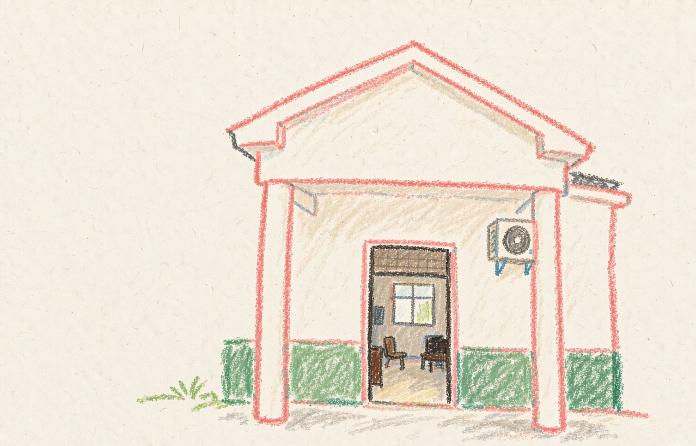
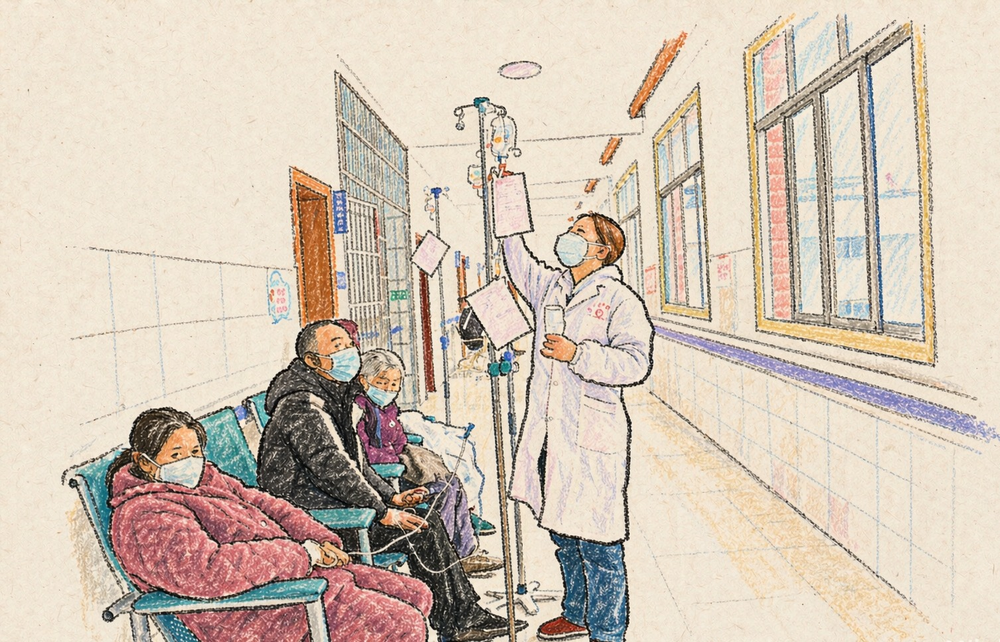
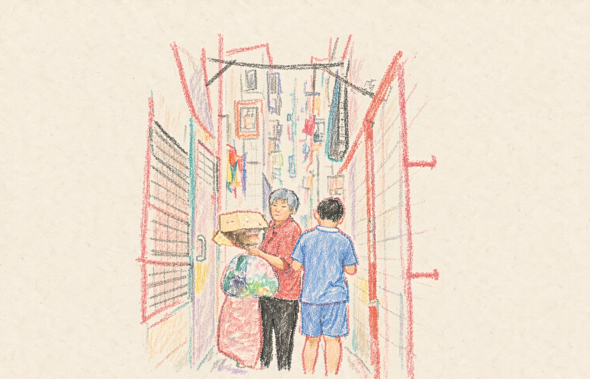
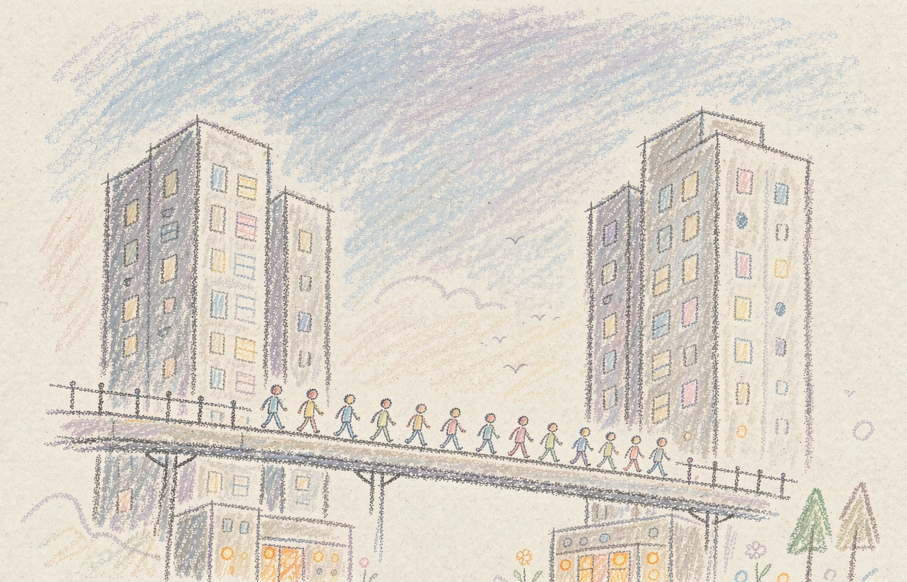
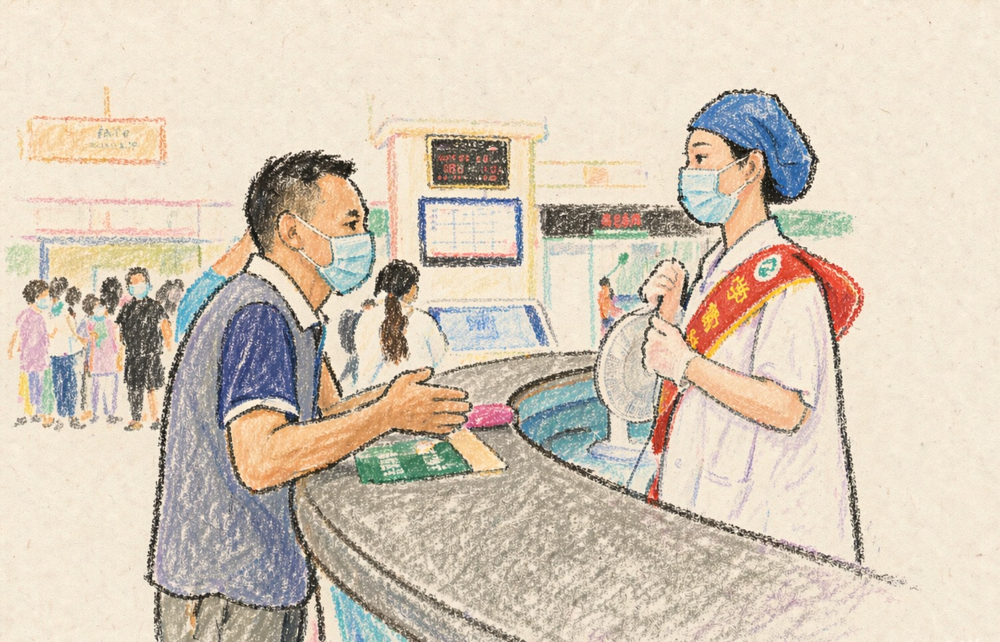
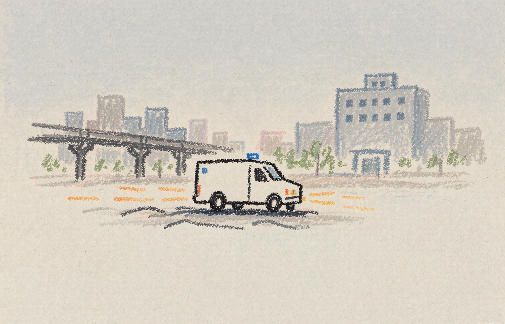
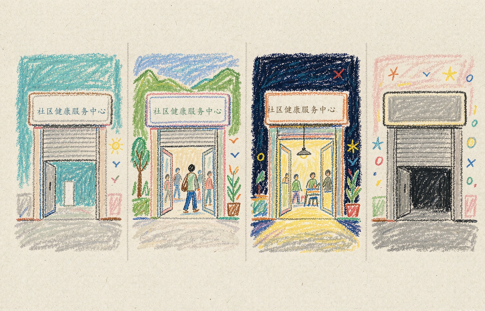
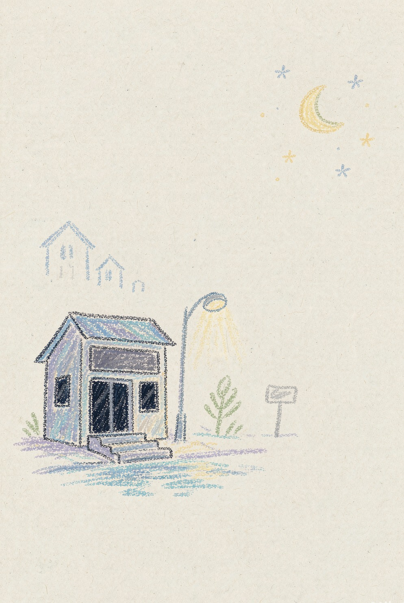
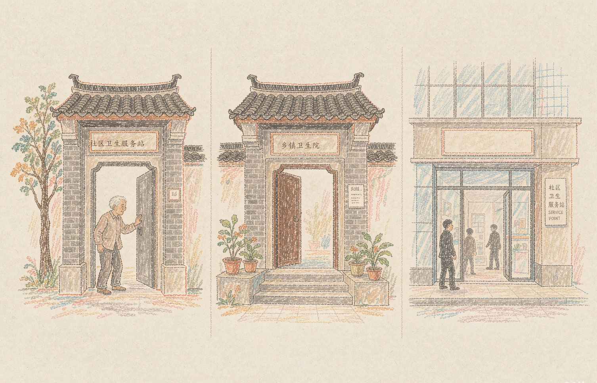
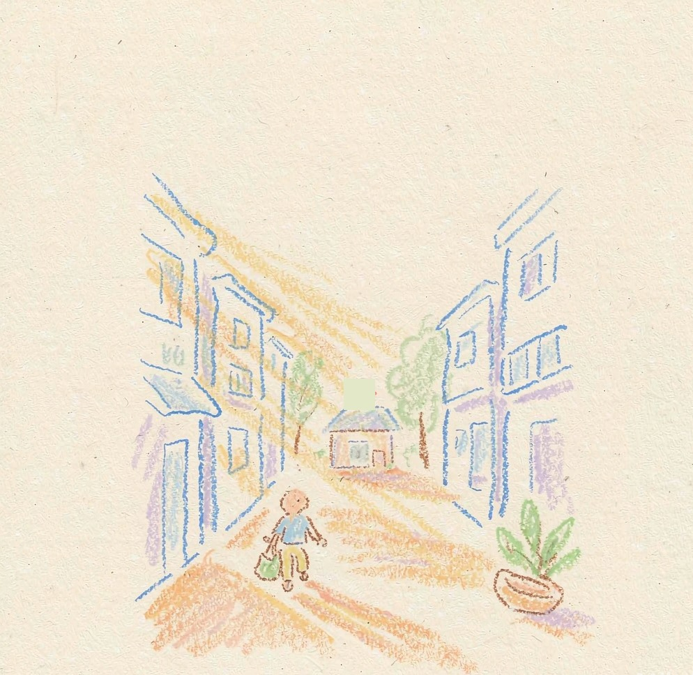

奔向2027：15分钟医疗圈如何真正走进生活？
从家门口出发，走到真实获得医疗服务的那一步，这个距离才算真正走进生活。
生病时，
你的第一反应是去哪？
起点之问
到家门口的这段路，不止一个距离
地图上的直线距离很短，真实步行却可能绕过围墙、道路和出入口。即使能在15分钟内到达，附近社康是否开诊、能否提供所需服务，仍决定了这段路是否真正通向医疗服务。
这一篇，我们沿着三个问题往下走
15分钟医疗圈，正在怎样进入城市生活？
15分钟，真的走得到吗？走到了，它会成为第一站吗？
需要的时候，它还在吗？有没有人，已经做到了？
一个人从产生医疗需求，到真正获得医疗服务，并不只有「距离」这一步。
基层拼图
15分钟医疗圈，正在怎样进入城市生活？

全国年诊疗人次（亿）
基层承接了其中过半的诊疗服务
2015 年基层诊疗占比
十年前这条曲线的起点
2025 年基层诊疗占比
公报口径 · 仍未回到十年前
全国一年发生的诊疗人次已经超过百亿，基层医疗卫生机构承接了其中过半的诊疗服务。但把时间线拉长，基层承担的诊疗份额并没有沿着一个方向持续增长。
全国基层诊疗占比：十年间走过一条浅 V
数据来源：历年全国卫生健康事业发展统计公报（2015–2025）｜样本量：全国总量（亿人次）｜时间：2015–2025｜口径：基层＝社区卫生服务中心(站)+乡镇卫生院+村卫生室+门诊部(所)；2025 年为公报值 53.1%（吹风会口径 52.6% 仅作对照）；2020 年受疫情影响为异常年。
全国基层诊疗占比在下降后有所回升，但仍未恢复到十年前的水平。
诊疗份额的变化之外，基层医疗网络本身也在调整。
村卫生室与门诊部及诊所：此消彼长的十年
数据来源：历年全国卫生健康事业发展统计公报｜样本量：全国机构数（万所）｜时间：2015–2025｜口径：门诊部及诊所 2024 年起为「门诊部 47242 ＋ 诊所/医务室 351736」合并口径；2025 年仅村卫生室有公报值 56.0 万（四舍五入），门诊部及诊所未披露，故虚线止于 2024。
基层医疗机构的数量与构成发生了变化，但机构规模本身不能直接代表居民实际获得的服务。阅读这组数据时，需要同时关注网点结构与后续的服务使用情况。

机构结构在变化，支撑这些服务的人力也在增长。
基层卫生人员：柱子长高了，占比却几乎走平
数据来源：历年全国卫生健康事业发展统计公报（2015–2024）｜样本量：全国基层卫生人员数与占卫生人员总数比｜时间：2015–2024｜口径：2023 年起全科医生统计口径调整，2022→2023 的跳升含口径变化；左轴为人员绝对数（万人），右轴为占卫生人员总数比（%）。
卫生人员总量的变化不必然意味着基层人员占比同步提高。判断基层服务的人力支撑，既要看总量，也要看人员在不同层级之间的分布。
如果机构分布越密集，基层医疗相关指标就一定越高，那么散点图中理应出现清晰的同步变化。
机构密度与使用率：全省放在同一张图上看
数据来源：2023年《中国卫生健康统计年鉴》机构数据与2024年分省非医院机构占比数据｜样本量：30个省级单元｜时间：2023–2024｜口径：纵轴为非医院机构占比的倒算口径，不等同于基层诊疗实际使用率；机构数据与占比数据的年份不完全一致；气泡大小＝常住人口；r=0.030 表示线性相关极弱。
网点分布反映服务网络的空间基础，却不能单独说明居民是否真正使用这些服务。机构数量、空间可达与实际诊疗，是理解基层医疗的不同维度。
空间实测
把居住小区放回真实步行路径中，才能看到「15分钟」在地图上如何落地。

地图上的医疗服务点之间，看起来只是距离的远近。落到真实道路上，距离却要经过围墙、街区、河流、天桥和道路连接，才能变成实际的步行时间。
深圳的步行实测，将起点放在具体小区，沿真实路径计算到最近社康所需的时间。
90%+
官方口径：15 分钟内到达医疗服务点
2026 年 9 月，国家卫健委发布会公布：全国 90% 以上的居民，15 分钟内可到达最近的医疗服务点。
85.3%
本次实测：1021 个小区步行可达率
样本范围、统计单位与测量方法与官方不同，不作直接相减——我们量的，是你发烧时会去找的那扇门。
1021 个小区到最近社康的实测步行时间
数据来源：高德步行路径规划 API 逐点实测；样本：商品房 801 / 老旧社区 172 / 城中村 48，合计 1021 个小区；时间：2026-09 采集；口径：步行时间取「门到门最短路径」，不含等电梯与挂号；点选时段按钮，可切换只看某一个时段，选「全部（构成）」看 7 段完整构成；前 3 段（0–15 分钟）为 15 分钟政策线以内；⚠ 城中村样本仅 48 个，长尾各段计数极小，不作比例外推。
对深圳1021个居住小区进行步行路径实测后，85.3%的样本点可在15分钟内步行到达社康。这个比例呈现的是样本小区的步行可达情况，不等同于全体居民实际就医比例。
这种差异首先出现在小区类型之间吗？
三类小区：样本量 / 可达率 / 中位步行
数据来源：高德步行路径规划 API 逐点实测；样本：商品房 801 / 老旧社区 172 / 城中村 48，合计 1021 个小区；时间：2026-09 采集；口径：可达率＝该类小区步行 ≤15 分钟数量 ÷ 该类样本量，中位步行＝该类小区到最近社康步行时间的中位数（门到门，不含等电梯与挂号）；⚠ 三栏 x 轴量纲不同（个 / ％ / 分钟），只作横向「同类比较」；⚠ 城中村仅 48 样本，稳定性弱于商品房与老旧社区。
三类小区的可达率几乎重合。商品房、城中村和老旧社区，并没有呈现出明显的层级差别。
这使得问题的焦点从小区自身的类型，转向了它在城市中的具体位置。
深圳 10 区 15 分钟步行可达率地图
数据来源：高德步行路径规划 API 逐点实测；样本：深圳 1021 个居住小区，分区样本量 21（大鹏新区）–156（宝安区）；时间：2026-09 采集；口径：可达率＝该区步行 ≤15 分钟小区数 ÷ 该区样本数；⚠ 大鹏新区样本仅 21 个，颜色极不稳定，仅作方向参考；⚠ 官方口径（90% 以上）与本次实测口径（全市 85.3%）不同，不可直接相减；⚠ 底图：DataV GeoAtlas 440300，大鹏半岛从龙岗区拆出、单列为「大鹏新区」（按 440399 标记）。
各区可达情况并不均衡，光明和大鹏的样本可达率相对较低，而多数区域保持在较高水平。全市平均值可能掩盖局部区域的空间缺口。
但地图上的比例还不是故事的终点。同样的可达率，放在不同的人口规模中，意味着不同的绝对人数。
各区「15 分钟不可达」常住人口（万人）
数据来源：高德步行路径规划 API 逐点实测（2026-09 采集）＋ 2024 年末常住人口；样本：深圳 1021 个居住小区，分区样本量 21（大鹏新区）–156（宝安区）；口径：不可达人口 ＝ 该区常住人口 ×（1 − 该区 15 分钟步行可达率），假设样本小区可在区内代表人口分布；条形长度＝不可达人口估计值，条形颜色＝该区不可达率，横线＝该估计值的 95% 置信区间；⚠ 大鹏新区样本仅 21 个，置信区间极宽，只作方向参考；⚠ 十区合计约 248.4 万，为样本外推估计，非官方统计；⚠ 人口为 2024 年末数据，与 2026 年实测可达率存在年份差。
将各区样本不可达率与常住人口结合外推，深圳十区不可达人口估计合计约248.4万人。该结果是基于样本的估算，并非逐户统计或官方公布人数；大鹏样本量较少，需谨慎解读。

就医路径
到达基层网点之后，居民是否会在这里就诊，以及基层与医院之间能否顺畅转诊，是另一道关。
上海社区诊疗占比（2024）
2015 年为 32.7%，一路下行
试点城市考核标准
国办发〔2015〕70 号附件 · 非全国统一目标
双向转诊占基层诊疗量比重
通道存在，但绝大多数就诊没有被「转」
一家社康离家近，并不意味着它一定会出现在居民的就医选择中。基层医疗要成为就医过程中的重要一站，既需要承担实际的诊疗服务，也需要与居民建立联系，并在必要时与上级医院形成转诊通道。
全国基层诊疗占比距 65% 试点考核线的缺口
数据来源：历年《我国卫生健康事业发展统计公报》；时间：2015–2025；口径：图7 以 2025 年数据为重点，65% 出自国办发〔2015〕70 号附件的试点城市考核标准（引用须写「试点」），不是全国统一目标；⚠ 与第一章图1 口径不同：图1 为基层诊疗量占比，本图为距 65% 目标的绝对缺口，两者互补，不作并列或相减；⚠ 2020 年受疫情影响为异常年。
基层诊疗占比虽在近年回升，但仍低于十年前的水平。65%来自试点城市考核标准，应作为政策背景参照，而非全国统一目标。
全国整体的变化，也不代表所有地区都沿着相同的方向前进。
全国回升 vs 上海向下：两条曲线的十年
数据来源：上海统计年鉴（社区诊疗占比）＋历年《我国卫生健康事业发展统计公报》（全国基层占比）；时间：2015–2024；口径：上海「社区诊疗占比」（27.96%，2024）与全国「基层诊疗占比」（52.1%，2024）是两个不同口径、不同分母，绝对值不可直接比较，本图只比趋势方向（2015=100 指数化）；上海 2020/2022 为疫情异常年；上海下降主要集中在中心城区。
全国基层诊疗占比在下降后有所回升，上海社区诊疗占比则呈现不同走势。不同地区的基层服务发展并不同步，不能只用单一趋势概括。
签约制度则让我们进一步看到，建立服务关系与实际接受服务之间，还有一个转换过程。
上海组合签约率：名字多了，脚步没有跟上
数据来源：上海市历年统计公报、市卫健委政协提案答复、经济日报、健康报；时间：2016–2024；口径：2017–2022 的五个点原文均为「超/以上」，只能当下限读（空心点表示），2023–2024 才是精确值（实心点）；⚠ 签约率（占居民比）与社区诊疗占比（占就诊比）是两个不同口径，不可并列或相减。
上海组合签约率逐渐升高，但社区诊疗占比没有以相同幅度同步上升。建立签约关系与实际接受基层诊疗，是相连却不同的环节。

建立联系，与真正使用服务，是就医过程中相连却不同的两个环节。
而当居民已经进入基层医疗服务体系，下一步还涉及基层与医院之间能否形成顺畅的转诊联系。

双向转诊：通道变宽，占比仍然很小
数据来源：国家卫健委/医保局历年答复与发布会实录（逐年来源不同，见数据表）；时间：2015–2025；口径：转诊率＝双向转诊人次 ÷ 基层诊疗人次（分母为基层，非总诊疗）；⚠ 2017、2022 为自行反推的推算值（空心标记）；2016、2025 无官方总量，不画点；数据性质逐年不同，趋势方向可读、绝对值需谨慎。
双向转诊量有所变化，但转诊量占基层诊疗量的比例仍然较低。转诊通道的建立，不等于它已经成为普遍的就医路径。
服务时间
走得到，不代表需要时能获得服务。把步行路径与社康营业时间叠加，15分钟内可抵达且仍在开诊的服务范围，会随时间变化。
知道去哪家医疗机构，并不意味着随时都能去。医疗服务有自己的时间表，居民的生活也有各自的节奏，两者一旦错位，家门口的医疗机构即使距离不远，也未必能在需要时提供服务。
24 小时里，「步行可达且开诊」的变化
数据来源：高德步行路径实测 × 社康营业时间解析；时间：2026-09；样本：1021 小区 × 945 机构；口径：可达率＝该小时「步行≤15 分钟且机构开诊」的小区占比；⚠ 晚间可达率为下限（高德营业时间系统性低估晚间，盐田逐点复核差异中 4/5 为高德偏短）；⚠ 夜间非 0 的部分来自 24 小时急诊兜底，不代表「15 分钟医疗圈」覆盖；8 点前的低值不代表无人可达——是机构未开诊。
上午10—11时，84.8%的住宅小区可在15分钟内步行到达仍在开诊的社康；20时降至57.6%，21时进一步降至14.2%。空间距离没有改变，但可用服务会随开诊时间收缩。
对工作时间固定、需要定期复诊或承担照护责任的人群而言，门诊时段可能影响就医安排。延时服务和周末开诊，是缩小这一时间缺口的可能方式。

945家社康中有177家缺少可用的营业时间字段，占18.7%；另有171个小区无法确认最近社康的营业时间。两组数据的统计单位不同，反映的是服务时间信息本身仍存在缺口。下图每个灰色便签，就是一家「查不到几点开门」的社康。
机构开着，不等于 15 分钟内能走到一家开着的机构
数据来源：高德开放平台 POI 营业时间解析（表 D）；时间：2026-09；样本：945 家机构；口径：开诊占比＝该小时处于营业时段内的机构数 ÷ 945，不含空间可达约束；⚠ 「城市人作息」为典型作息的示意曲线，用于对照，非实测数据；⚠ 0.8% 的夜间基线来自 24 小时值班站及营业时间缺失机构。
上午10—11时，机构端开诊率为99.3%；同一时段，能在15分钟内步行到达一家开诊社康的小区占比为84.8%。服务点的分布、真实步行路径与开诊时间，共同影响着居民在特定时段的实际选择。

机构开着，不等于居民在15分钟内就能走到一家开着的机构。
区 × 时段：一天里哪些地方、哪些时候还能看病
数据来源：高德步行路径实测 × 社康营业时间解析（表 A–E）；时间：2026-09；样本：各区内有营业时间的小区（见各区括号内 n）；口径：可达率＝该区该小时「步行≤15 分钟且有机构开诊」的小区占比；⚠ 光明区 95 个样本中 55 个营业时间未知、大鹏新区仅 21 个样本，两区结果不确定性大，读图时须对照括号内 n；⚠ 龙华区因含较多 24 小时值班站，深夜逆势偏高，属特例而非普遍。
不同区域在午间和夜间的可达且开诊比例存在差异。解读时需同时关注各区样本量和营业时间信息完整度，不能把个别区域的特殊值视为普遍情况。
走得到的距离，还需要与可用的时间重叠。
面对网点、使用和时间上的不同限制，各地也在尝试从不同环节重新组织基层医疗服务。
三地破局
有些「15分钟」，已经开始这样运转
北京、长汀和广州天河分别从服务网络、基层诊疗结构和服务时间入手，呈现基层医疗服务改善的不同方向。

把现有的网用得更透：网点在净减少，诊疗量却在明显增长。
图14 · 机构数量 vs 社区诊疗量（2023–2024）
把人引回正确的路径：基层诊疗占比沿着时间一路向上。
图15 · 长汀基层诊疗占比（2018 → 2025）
把时间对齐人的生活：服务时间统一延长，夜诊纳入区域安排。
图16 · 天河社康延时服务结构
北京社区卫生服务机构总数净减少，诊疗量却明显增长。机构数量与服务使用量并不总是同步变化，评价服务网络还需关注既有机构实际承担的诊疗服务。
长汀基层诊疗占比沿时间上升，呈现了当地基层诊疗结构的变化。这个案例提供的是同一地区的时间变化线索，不宜直接与其他地区作简单排名。
广州天河将社康服务时间延伸至更晚时段，并将夜诊纳入区域安排。它展示了通过调整服务时间，让基层医疗更贴近居民生活节奏的一种做法。
回到原点
回到那个15分钟
回到开篇的问题：生病时，你的第一反应是去哪？
一路看下来，15分钟不再只是地图上的一个圆。它需要沿着真实道路落到居民脚下，也需要从一个医疗服务点，延伸成一段能够继续走下去的就医过程。
地图上的圆，得落到真实的路上
深圳的步行实测，把地图上的空间覆盖放进了具体的居住地点。大多数小区能够在15分钟内走到最近社康，但区域之间仍有差异，部分地方的步行缺口也在更大的居住人口规模中显现出来。
一个医疗点被标注在地图上，并不意味着每一条通往它的路都同样方便。15分钟的起点，是居民真正能够抵达。
家门口的点，还得接上下一程
走到社康，并不意味着一次就医已经顺利展开。基层诊疗、家庭医生签约与双向转诊，分别呈现了基层医疗与居民实际就医之间的不同联系。
一个点只有进入真实的就医过程，才不只是地图上的位置，而成为居民看病时可以选择的一站。
服务的灯，要亮在需要的时候
即使路程不远、就医路径清楚，时间仍然决定着服务能否真正派上用场。午间与夜间的起伏提醒我们，服务的可用范围并不是固定的。
一扇门什么时候开，决定了居民什么时候能够走进去。家门口的服务不仅需要存在，也需要在居民需要的时候保持可用。
「15分钟」从来不只是15分钟的距离
它需要让居民走得到、走得通，也在需要的时候用得上。
2027正在靠近。衡量家门口的医疗服务是否真正走进生活，不只看地图覆盖了多少地方，更要看居民需要时，能否顺利抵达，并获得所需服务。

走得到 · 走得通 · 用得上
数据溯源
每一个数字，都可以被追问
这篇作品里的每一个数字，都标注了它的来源、口径与局限——包括那些让结论变得不那么漂亮的部分。对数据诚实，是从承认它在哪里失效开始的。
数据来源（9 类）
- 全国基层医疗网络：国家卫生健康委员会历年《我国卫生健康事业发展统计公报》与《中国卫生健康统计年鉴》，涉及2015—2025年的机构数量、卫生人员与诊疗情况。2025年全国总诊疗人次及基层医疗卫生机构诊疗人次依据《2025年我国卫生健康事业发展统计公报》。
- 省域指标：2023年《中国卫生健康统计年鉴》机构数据与2024年分省非医院机构占比数据，涉及30个省级单元。
- 深圳空间实测：深圳1021个小区点位与步行路径数据，按步行路径测算到最近社康所需的时间，2026年。
- 深圳时间实测：945家社康营业时间信息整理与步行可达情况叠加，2026年。
- 上海就医路径：上海市卫生健康委员会历年统计公报及公开答复。
- 双向转诊序列：根据医保、卫生健康等部门不同年份的公开答复整理，其中2017年、2022年为推算值。
- 北京样本：北京市卫生健康委员会公开数据，2023—2024年。
- 长汀样本：长汀医改相关公开汇编数据，2018—2025年。
- 广州天河样本：广州市天河区卫生健康部门公开数据，包括服务时间与夜诊情况。
- 官方可达率参照：2026年9月14日国务院新闻办公室相关发布会公布的15分钟医疗服务可达口径。
图表口径说明（红线）
- 全国基层诊疗占比采用2025年统计公报口径53.1%；此前52.6%的发布会口径不与之混用。
- 图7中的65%来自国办发〔2015〕70号附件中的试点城市考核标准，不是全国统一目标。
- 官方可达率与深圳小区步行实测的样本范围、统计单位及测量方法不同，应分别呈现。
- 图4纵轴为非医院机构占比的倒算口径，不等同于基层诊疗实际使用率；机构数据与占比数据的年份不完全一致。
- 深圳各区不可达人口由小区不可达率与常住人口折算估计，并非逐户统计结果。大鹏小区点位较少，相关数值结合样本量及估算区间阅读。
- 上海27.96%为社区诊疗占比，42%为签约居民社区就诊率，属于不同指标，不相减、不混为一谈。
- 双向转诊序列由不同部门、不同年份的公开答复整理而来，并非口径完全一致的连续公报序列；2017年和2022年数据为推算值。
- 深圳时间分析中，小区可达且开诊比例与机构本身开诊率的统计单位和分母不同，不直接相减归因。
- 945家机构中177家营业时间字段缺失；时间分析中另有171个小区的最近社康营业时间未知，两组数字的统计单位不同。
- 夜间营业时间信息存在误差，相关结果在图注中标明为保守下限。
- 北京、长汀和广州天河的统计口径、时间跨度与观察维度不同，不作简单横向排名。